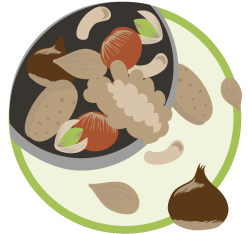
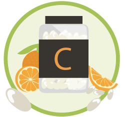

Products
Nuts
Eating nuts helps your heart. Eating nuts as part of a healthy diet may be good not just for that. Nuts contain unsaturated fatty acids and other nutrients. And they’re a great snack food inexpensive, easy to store and easy to pack. One drawback to nuts is that they’re high in calories, so it’s important to limit portions. Discover in our shops how walnuts, almonds and other nuts can help lower your cholesterol when eaten in a good diet.
Body Care

Body and hand creams have become a ubiquitous element of the personal care spa products market and the variety available these days is absolutely endless. You can spend as little as a few dollars to as much as several hundred when purchasing a body lotion, and they come in all kinds of scents, and colours. Due to this, choosing a lotion can be a confusing but not with us, come to our store to know what kind of cream is for your skin.
Body Building

We are very pleased to be able to offer a wide range of vitamin tablets and vitamin capsules for all walks of life. If you’re looking to buy vitamin supplements to help boost your health, our range offers everything from vitamin A to vitamin K, and is one of the largest ranges of vitamins. All of them can help your body and your muscles, specially when you are work out. So, what are you waiting? Come in our shop to see the variety of products we have.
Snacks

Tasty and nutritionally balanced. Vitamins and supplements don’t always need to be taken in the form of tablets or capsules. Our new range of delicious foods and snacks have the built in benefits of our vitamins and minerals. A range of nutritious and delicious snack bars nutritionally balanced to provide 15% of your daily nutritional requirements of energy, protein, carbohydrates, fat, fibre as well as 11 vitamins and 6 minerals. Discover more into our shop.
Vitamins
Our bodies can’t produce all of the nutrients that we need to function properly, so we have to eat vitamins. Vitamins are compounds which are necessary for our normal growth and function, which we cannot make within our bodies, and so we must obtain them from our foods. They were present in ample amounts in ordinary foods but it is possible to become deficient in vitamins, and that damages health. Now, you can find them in our shop and an expertise will help you.
Gluten Free
Most people have no need to cook gluten free. For those with wheat allergies or celiac disease, however, gluten-free cooking must become a way of life. Presumably, those who are looking for gluten-free recipes already know why they cannot eat wheat, barley, rye or derivatives therefrom. In our store we have a large variety of products for gluten-free costumers. Delicious sweetnes or other flavors to give you the best experience when you are eating.